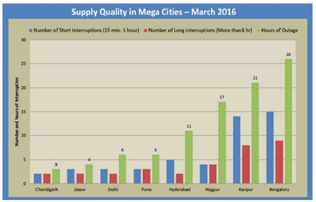
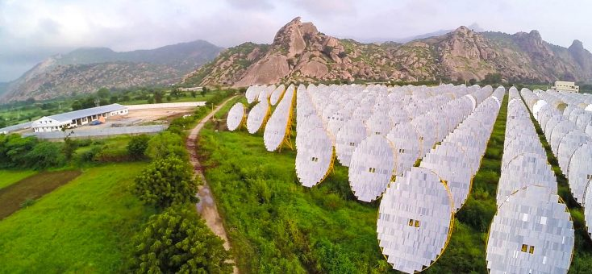

در سراسر جهان در حال توسعه، تقریبا ۱.۲ میلیارد نفر به برق دسترسی ندارند. از این تعداد، حداقل ۳۰ درصد در هند زندگی میکنند. علاوه بر این، حداقل ۲۴۷ میلیون نفر در هند دسترسی نامنظم به برق را تجربه میکنند، و بسیاری تنها حدود ۴ ساعت در روز برق دریافت میکنند. دولت هند، در زمان نخستوزیری نارندرا مودی، متعهد به ایجاد دسترسی جهانی در سراسر کشور شده است. با این حال، مشکل برق هند فقط مربوط به پوشش ناکافی نیست؛ همچنین در مورد کیفیت ضعیف برق، به ویژه در قالب نوسانات ولتاژ نیز می باشد.
کیفیت ضعیف برق بر تمام بخشهای مصرفکنندگان تاثیر میگذارد؛ این فنآوری میتواند به تجهیزات آسیب برساند و مشکلات دیگری از جمله از دست دادن دادهها و سایر اشکال از دست رفتن یا ناکارآمدی را برای کسب و کارها و سایر نهادها ایجاد کند. با این حال، بهبود کیفیت برق چالشبرانگیز است و نیاز به دسترسی بلادرنگ به دادهها دارد. در سال ۲۰۰۷، گروه انرژی پرایاس (PEG)، یک سازمان غیردولتی هندی، طرح نظارت بر تامین برق (ESMI) را برای تکمیل منابع داده موجود و جمعآوری اطلاعات کیفیت برق در زمان واقعی با نصب مانیتورهای تامین برق (ESM) در مکانهای مختلف راهاندازی کرد. ESMI اکنون در ۲۰۰ مکان در ۱۸ ایالت هند کار میکند. این ابتکار عمل، دادههای نظارت بر تامین برق را برای کاربران مختلف در سراسر کشور، در فرآیند افزایش آگاهی از وضعیت تامین برق، کمک به حمایت از ارائه خدمات بهتر و تاثیرگذاری بر سیاست هم در سطح کشور و هم در سطح کشور، در دسترس قرار دادهاست. علیرغم محدودیتهای خاص - و مقیاس ترسآور مسئله - ESMI نمونه مهمی از نحوه رسیدگی جامعه مدنی به مشکلات عمومی و پر کردن شکاف ناشی از شکستهای ارزیابی دادههای دولت است، زمانی که سازمانهای غیردولتی یک رویکرد باز برای جمعآوری و استفاده از داده اتخاذ میکنند.
پیشینه و زمینه
تمرکز بر مسئله / زمینه کشور
براساس برآوردهای محافظهکارانه، دستکم ۳۰۰ میلیون نفر از ۱.۲۵ میلیارد نفر جمعیت هند به برق دسترسی ندارند. مشکل با این واقعیت تشدید میشود که حتی برای کسانی که برق دارند، تقریباً ۲۶ درصد فقط به طور نامنظم دسترسی دارند، گاهی اوقات به اندازه چهار ساعت در روز.
در سال ۲۰۱۵، چشمانداز جهانی انرژی، که معتبرترین منبع تجزیه و تحلیل بازار انرژی در جهان محسوب میشود، پیشبینی کرد که این کشور برای برآورده کردن نیازهای انرژی خود نیازمند ۱۱۰ میلیارد دلار آمریکا در سال خواهد بود.
نخستوزیر نارندرا مودی، که در سال ۲۰۱۵ انتخاب شد، دسترسی جهانی به برق را به عنوان یکی از اولویتهای برتر خود قرار داد. دولت منابع قابلتوجهی را به برنامه برقرسانی روستایی اختصاص دادهاست که هدف آن برقرسانی ۱۲۱، ۲۲۵ روستای بدون برق، بهبود تامین برق ۵۹۲، ۹۷۹ روستای دارای برق جزئی و تامین برق رایگان برای همه خانوارهای روستایی است. تا ۳۰ ژوئن ۲۰۱۶، تخمین زده میشود که بین ۵۰ تا ۸۰ درصد از این اهداف محقق شده است.
با این حال، کیفیت ارائه خدمات برق همچنان ضعیف باقی میماند، که با خاموشی بدنام ۲۰۱۲ هند لکهدار شدهاست، که در آن ۶۸۰ میلیون نفر تحتتاثیر قرار گرفتند. علل ریشهای این مشکل متعدد هستند. توزیع در شبکه قدیمی و با اتصال ضعیف هند، یکی از مسائل اصلی است. براساس برخی برآوردها، بیش از ۳۰ درصد برق کشور در اثر ناکارآمدی شبکه از دست میرود. اما مشکل تنها در مورد روند توزیع نیست. کشور به سادگی برق کافی تولید نمیکند. براساس گزارش سال ۲۰۱۵ موسسه تحقیقات سیاسی که یک موسسه تحقیقاتی مستقل است، کسری برق کشور ۳.۶ درصد است. حتی این رقم احتمالا مشکل را دستکم میگیرد، با توجه به اینکه آمار تامین انرژی تنها تقاضا را براساس مصرفکنندگان متصل موجود محاسبه میکند، به این معنی که چنین ارقام کسری قدرتی نمیتوانند میلیونها نفری که اصلا برق ندارند را در نظر بگیرند.
یکی از بزرگترین مشکلات، هرچند که کمتر به آن اذعان شدهاست، مربوط به کیفیت تامین برق هند است. کیفیت برق شامل تغییرات ولتاژ (شکاف و ضعفها)، کاهش ولتاژ، قطع برق، نوسان ولتاژ و اختلالات هارمونیک در منبع است. به بیان ساده، کیفیت ضعیف برق اشاره به قطع برق (که ممکن است از چند دقیقه تا چند روز طول بکشد) یا افزایش خطرناک در تامین برق دارد که میتواند به دستگاههای الکترونیکی خانگی آسیب برساند.
چنین مشکلات کیفیتی در هند گسترده هستند و پیامدهای مهمی برای مصرفکنندگان خانگی و صنعتی دارند. در حالی که تعیین کمیت پیامدهای آن دشوار است، مطالعهای که در سال ۲۰۰۰ انجام شد نشان داد که کسبوکارها باید ۱۵.۵ میلیارد دلار آمریکا در تسهیلات پشتیبان تولید برق سرمایهگذاری کنند تا از اثرات نامطلوب کیفیت ضعیف برق جلوگیری شود. این اثرات نامطلوب شامل یخزدگی صفحهنمایش کامپیوتر، از دست دادن اطلاعات، سوسو زدن چراغها و آسیب به تجهیزات، از جمله مسائل دیگر است.
پرداختن به مسائل مربوط به کیفیت توان یک چالش قابلتوجه است - از برخی جهات، بیشتر از پرداختن به مشکل تامین موجود نیست. برای پرداختن به این موضوع، دادههای حقیقی مورد نیاز است و چنین دادههایی به سختی قابل حصول هستند. تنظیمکنندگان، تولیدکنندگان و مصرفکنندگان برق نیاز به اطلاعات بیشتری در مورد زمانی دارند که احتمال قطع یا وصل شدن برق وجود دارد و عواملی که معمولا باعث نوسان ولتاژ میشوند. دادههایی که میتوانند به پیشبینی نوسانات توان کمک کنند و هشدارهای قبلی در مورد افت و خیزهای ولتاژ را ارائه دهند نیز بسیار مهم هستند.
برای پیشرفت به سمت ارزیابی صحیح بسیاری از مشکلات فعلی در بخش تامین انرژی هندوستان، به یک مجموعه داده پیچیدهتر نیاز است. با توجه به مطالعه اخیر، مقررات مختلفی در مورد کیفیت برق در هند وجود دارد که توسط اداره برق مرکزی (CEA) و همچنین توسط کمیسیون تنظیم برق کشور صادر شدهاست. چندین نقص و تغییر در این مقررات وجود دارد، به ویژه زمانی که بحث اجرای آن مطرح میشود، همچنین در روشی که دادهها مدیریت یا اداره میشوند. برای مثال، دامنه تغییرات ولتاژ برای برخی از ایالتها ۱۰ درصد است اما برای برخی دیگر ۱۲.۵ درصد میباشد. در میان ایالتها، هیچ برنامه نظارت ولتاژ قابل اعتمادی برای فراهم کردن دادههای کیفیت توان وجود ندارد. تنها راه برای گزارش ولتاژهای پایین یا قطع برق، تماس گرفتن با شرکت برق محلی و شکایت است - یک فرآیند وقتگیر و دستی، که در هر صورت تاثیر به سزایی نخواهد داشت.
چنین نقصهایی سیاستگذاران و کسانی که به دنبال بهبود کیفیت برق هستند را تحتتاثیر قرار میدهد. مصرفکنندگان همچنین به طور مستقیم تحتتاثیر کمبود دادهها هستند؛ برای مثال در زمینه شکایت کردن علیه شرکتهای توزیع در مورد مشکلات در تامین برق. بدون وجود دادهها، آنها هیچ مدرکی برای پشتیبانی از ادعاهای خود ندارند. در حالی که استانداردهای روشنی در رابطه با تغییرات قابلقبول در پارامترهای تامین وجود دارد، که توسط موسسه مهندسان برق و الکترونیک (IEEE) تعریف شدهاست، شهروندان یا حتی قانونگذاران اغلب هیچ داده قابلاعتمادی ندارند تا نشان دهند که این استانداردها رعایت نمیشوند.
دادههای باز در هند
دولت هند، سیاست ملی به اشتراکگذاری دادهها و دسترسی به دادهها (NDSAP) را در اوایل سال ۲۰۱۲ تصویب کرد. این سیاست را میتوان به عنوان اولین قانون توانمندکننده در رابطه با افشای فعال دادههای دولتی در نظر گرفت و اختیار قانون حق دسترسی به اطلاعات (RTIA) را گسترش داد. این قانون سیاستها و روندهایی را در انتشار مجموعه دادههای دولتی از سازمانهای مختلف در دولت مرکزی از طریق یک پورتال ملی ایجاد کردهاست. پلتفرم داده باز ملی در همان سال راهاندازی شد. از آن زمان، این درگاه به منبع اصلی مجموعه دادههای دولتی تبدیل شدهاست که ۱۰۲ بخش را پوشش میدهد و حداقل ۱۱۱ افسر ارشد اطلاعات را در بر میگیرد. تا به امروز، این درگاه دارای ۴۴، ۱۷۴ منبع در ۴، ۰۴۳ کاتالوگ است که بخشهای ضروری مانند بهداشت، محیطزیست، آموزش، کشاورزی، تجارت، معدن، قانونگذاری، نیروی کار، قدرت و انرژی، گردشگری را پوشش میدهند. با این حال، بارومتر دادهباز ۲۰۱۵ نشان دادهاست که علیرغم افزایش تعداد مجموعههای داده، شواهد کمی در مورد تاثیر بر پاسخگویی، اثربخشی و کارایی دولت و در ثبات محیطی یا شمول اجتماعی وجود دارد. شاخص داده باز، هند را در ۵۵ درصد دادههای باز قرار داده و این کشور را در نسخه ۲۰۱۵ خود در رتبه ۱۵ قرار دادهاست.
پایگاهداده بخش برق و انرژی در پورتال ملی شامل حداقل ۱۳۷ کاتالوگ داده است که ۴۷ مورد آن به مبحث تامین برق و نیرو اختصاص دارد. موارد دیگر شامل اطلاعات در مورد مناطقی مانند عملکرد نیروگاههای حرارتی، تلاش برای گسترش استفاده از انرژی تجدیدپذیر و عرضه و تقاضای گاز طبیعی است. هیچیک از این مجموعه دادهها شامل اطلاعات مربوط به کیفیت برق نیستند. آنها عمدتا بر روی تولید برق متمرکز هستند. مدیریت کاتالوگهای داده نیز دشوار است، چرا که چندین مجموعه داده توسط دولت ساختاربندی شدهاند و به هیچ طریقی به هم مرتبط نیستند که اجازه تجزیه و تحلیل ملی یا جهانی را بدهد.
فعالان اصلی
ارائهدهندگان دادههای کلیدی
وزارت نیرو، دولت هند
وزارت برق هند، سه رکن اصلی بخش برق کشور را اداره میکند: تولید، انتقال و توزیع. در سیاست و مقررات، حداقل دو آژانس دارای یک دستور هستند: اداره برق مرکزی (CEA)، مسئول توزیع کلی نیرو در کشور؛ و کمیسیون مرکزی تنظیم برق (CERC)، مسئول تعرفهها، انتقال بینایالتی، استانداردهای شبکه و رسیدگی به اختلافات مربوط به توزیع برق. همچنین کمیسیون مرکزی نظارت بر خدمات برق موظف است اطمینان حاصل کند که ذینفعان به اطلاعات مربوط به ارائه خدمات برق دسترسی دارند. این آژانسها مجموعه دادههای مختلف مربوط به اختیارات خود را جمعآوری میکنند.
شرکتهای تولید، انتقال و توزیع (GTD)
بخش تولید برق در هند به سه بخش تقسیم میشود: مرکزی، دولتی و خصوصی. تا ۳۰ ژوئن ۲۰۱۶، بخش خصوصی، حداقل ۴۱.۴۵ درصد ظرفیت نصبشده را به خود اختصاص میدهد و بخشهای مرکزی و دولتی به ترتیب ۲۲.۱۵ درصد و ۳۳.۵۹ درصد تولید میکنند.
شرکت پاورگرید شرکت هندی مسئول انتقال بینایالتی برق و توسعه شبکه ملی است. این شرکت انتقال مرکزی کشور (CTU) مسئول انتقال برق شرکتهای تولید برق مرکزی و تولیدکنندگان برق مستقل بینایالتی است. شرکتهای انتقال دولتی (STUها) مسئول انتقال برق از شرکتهای تولیدکننده دولتی و تولیدکنندگان مستقل سطح ایالتی هستند. شبکه برق نقش مهمی در ایجاد سیستمهای انتقال جدید و همچنین تقویت سیستمهای انتقال موجود در سطح مرکزی ایفا میکند.
توزیع برق، آخرین و مهمترین ارتباط با مصرفکننده در زنجیره توزیع نیروی برق است. متأسفانه توزیع برق بسیار ناکارآمد است و به طور متوسط سالانه ۲۰ درصد تلفات توزیع وجود دارد. توزیع در سطح ایالتی توسط شرکتهای دولتی یا شرکتهای خصوصی انجام میشود (میانگین ۱۳ درصد کاهش توزیع). کارایی توزیع از یک حالت به حالت دیگر متفاوت است.
شرکتهای توزیع برق مقادیر زیادی داده در اختیار دارند که تولید، انتقال و توزیع را پوشش میدهند. اطلاعات موجود کاملاً جزئی هستند و به دادههای مصرف در سطح خانوار میرسند. دادههای نگهداریشده توسط وزارت نیرو، در دولت مرکزی، از ارسالهای ارائهشده توسط این شرکتهای دولتی جمعآوری شده است.
کاربران و واسطههای دادههای کلیدی
گروه Prayas Energy
گروه Prayas Energy بخشی از Prayas است، یک سازمان غیردولتی مستقر در پونا، هند، که از منافع عمومی - به ویژه بخشهای محروم جامعه – محافظت کرده و آن را ترویج میکند. دارای چهار گروه کاری انرژی، سلامت، منابع و معیشت و یادگیری و والدین است. گروه انرژی یکی از قویترین و طولانیترین طرفداران ارائه بهتر خدمات برق در هند، به ویژه در میان فقرا، بودهاست.
گروه انرژی پرایاس یکی از کاربران کلیدی دادههای برق برای کار خود است. با این حال، به دلیل فقدان دادههای رسمی دولتی اختصاصدادهشده به کیفیت برق (باز یا غیر از آن)، Prayas برنامه نظارت بر روند تامین برق (ESMI) را راهاندازی کرد و در نتیجه تبدیل به ارائهدهنده داده شد.
موسسه منابع انرژی (TERI)
TERI مستقر در دهلی نو یکی از اندیشکدههای نوع توزیع انرژی پیشرو در هند است. تحقیقات خود را بر مبنای انرژی پاک، مدیریت آب، مدیریت آلودگی، کشاورزی پایدار و تابآوری آب و هوا متمرکز کردهاست. پروژههای شرکت توسعه اقتصادی در بخش انرژی شامل مطالعات تحقیقاتی در زمینه انرژیهای تجدیدپذیر - از جمله زیستتوده، باد، خورشید، و برق آبی - برای بررسی گزینههای موجود برای هند در بخش انرژی است. در طول چند سال گذشته، این شرکت چندین مقاله تحلیلی در مورد وضعیت تولید برق در هند انجام دادهاست.
شرکتها و گروههای تحقیقاتی خصوصی
دادههای مربوط به برق در هند به طور گستردهای توسط شرکتهای خصوصی مختلف و شرکتهای مشاوره برای پیشبینی سناریوهای آینده، تاثیر بر فرصتهای سرمایهگذاری و آگاهی ذینفعان قدرت از فرصتها و چالشها استفاده میشود. به عنوان مثال شرکت مک کینزی، KPMG و AT Kearney به طور منظم از دادههای بخش برق برای کار خود در کشور استفاده میکنند.
ذینفعان اصلی
گروهها یا سازمانهای نظارت بر سازمانهای مصرفکنندگان به طور کلی گروههای حمایتی هستند که حفاظت از مصرفکنندگان را در برابر انواع مختلف سوءاستفاده شرکتی ارتقا میدهند. در هند، چندین گروه مصرفکننده وجود دارد که در بخش انرژی نیز فعالیت میکنند، مانند صدای مصرفکنندگان دهلی نو، گروه مصرفکننده شهروند چنای (Chennai) و گروه اقدامات مدنی، فدراسیون انجمن مصرفکنندگان کلکته (Kolkata) و غیره. ESMI تا حدی با در نظر گرفتن این گروهها طراحی شد؛ آنها به عنوان کاربران کلیدی در نظر گرفته شدند که با استفاده از کانالهای جبران خسارت موجود، میتوانند به تقویت حمایت از پایش کیفیت توان در سطوح محلی کمک کنند.
تنظیمکنندگان ایالتی
کمیسیونهای نظارتی سطح ایالتی همان وظایف را انجام میدهند که CERC انجام میدهد، اما آنها بر روی ایالتهای فردی تمرکز میکنند. هند ۲۹ کشور و هفت قلمرو اتحادیه دارد. این موارد توسط ۲۷ تنظیمکننده برق در سطح ایالتی و دو کمیسیون مشترک مدیریت میشوند (یکی از آنها قلمرو اتحادیه و دو ایالت دیگر را پوشش میدهد). قانونگذاران ایالتی میتوانند از دادههای کیفیت برق برای نظارت بر تحویل برق و اجرای استانداردهای کیفیت استفاده کنند.
شرح پروژه
آغاز فعالیت منابع دادهباز
در سال ۲۰۰۷، گروه انرژی پرایاس (PEG)، یک سازمان غیردولتی هندی، طرح نظارت بر تامین برق (ESMI) را برای جمعآوری اطلاعات کیفیت برق در زمان حقیقی با نصب مانیتورهای نظارت بر تامین برق (ESM) در مکانهای مختلف در شهر پونا راهاندازی کرد. این ابتکار بخشی از تلاش مداوم گروههای مصرفکننده و تنظیمکنندگان در ایالت ماهاراشترا هند برای نظارت بر کیفیت برق پس از شکایات متعدد در مورد قطعیهای مکرر و قطع برق بود. پس از مشارکت در دفاع مبتنی بر شواهد در بخش برق هند از اوایل دهه ۱۹۹۰، Prayas از این مسائل آگاه بود و ابتکار ESM را در راستای "رویکرد فعال خود برای اشاره به ناکارآمدیهای عمده" و ایجاد شفافیت بیشتر و مشارکت شهروندان در بخش برق ایجاد کرد. این سازمان همچنین مداخلات قانونی و سیاسی متعددی را در حوزههایی مانند افزایش ظرفیت، هزینه سرمایه در انتقال و توزیع برق، و ارائه خدمات به مصرفکنندگان بدون برق انجام دادهاست.
در ابتدا، تردیدهایی در مورد کارایی یک راهحل مبتنی بر فنآوری برای نظارت بر تامین برق وجود داشت. نگرانیها شامل احتمال خرابی شبکه موبایل (ESM ها اطلاعات را از طریق شبکههای سلولی منتقل میکنند)، دشواری یافتن داوطلبان میدانی برای میزبانی دستگاههای نظارتی، و چالشهای توسعه یک ماژول نظارتی کمهزینه است. علاوه بر این، برخی سوالات در مورد نیاز به چنین سیستمی در محیط به سرعت در حال توسعه سختافزار هوشمند (به عنوان مثال، کنتورهای هوشمند) و ابزارهای نرمافزاری (به عنوان مثال، کنترل نظارتی و اکتساب داده، یا SCADA، سیستمها، که نظارت صنعتی و مکانیزمهای کنترل برای فرآیندهای پیچیده مانند توزیع انرژی را فراهم میکنند) مطرح شد.
با این حال، با گذشت زمان، برای همه ذینفعان آشکار شد که در واقع نیاز به یک سیستم جمعآوری داده شفاف و خودکار وجود دارد. از ماه می ۲۰۱۶، ESMI دویست مکان را در ۱۸ ایالت تحت پوشش قرار داده است، با ۱.۵ میلیون شاخه توزیع برق ۲۴ ساعتی با دادههای نظارتی موجود. همچنین مشخص شدهاست که این پروژه میتواند نقش توسعهای قدرتمندی ایفا کند، به ویژه با کمک به رسیدگی به نابرابریهای خاص در توزیع و مصرف برق. همانطور که شوتا کولکارنی، یکی از همکاران تحقیقاتی در Prayas و یکی از مدیران پروژه ESM میگوید:
اکثر سیاستهای بخش انرژی بر کارایی مالی و رشد اقتصادی تمرکز دارند در حالی که حکمرانی خوب و حقوق صاحبان سهام نادیده گرفته میشوند. این امر اغلب منجر به کیفیت ضعیف عرضه، به خصوص در محلههای فرعی میشود. یکی از راههای مهم برای تغییر این وضعیت بهبود شفافیت و پاسخگویی در این بخش با ایجاد یک پایگاهداده در دسترس عموم در مورد اطلاعات کیفیت عرضه برای نشان دادن تغییرات در کیفیت عرضه بین مناطق شهری و روستایی، ایالتهای مختلف، شرکتهای توزیع و مناطق با اهمیت اقتصادی است.
بودجه
ESMI یکی از شش فینالیست جایزه چالش تاثیر اجتماعی گوگل در سال ۲۰۱۳ بود. به هر فینالیست ۱۵ میلیون (تقریباً ۲۲۵۰۰۰ دلار) بودجه اولیه اهدا شد. با کمک مالی، پرایاس توانست مانیتورهای نظارت بر کیفیت برق توزیعی را در ۶۰ مکان در هشت ایالت، از جمله حداقل در پنج شهر بزرگ، نصب کند. این پوشش اولیه به سرعت در سالهای بعد گسترش یافت.
تقاضا و استفاده از داده
ESMI مشخص کرد که مدیریت کیفیت برق خوب بدون داده زمان واقعی غیرممکن است. این امر نه تنها برای مصرفکنندگانی که بیشترین تاثیر مستقیم کیفیت ضعیف برق را دارند، بلکه برای تولیدکنندگان و توزیعکنندگان برق و حتی قانونگذاران نیز صادق است. برای تولیدکنندگان و توزیعکنندگان، دادههای بلادرنگ کیفیت توزیع برق در شناسایی مشکلات در زمینه تولید، انتقال و توزیع مهم است. چنین دادههایی به آنها کمک میکند تا نقایص موجود در فرایندها و مدیریت خود را شناسایی و به طور بالقوه مورد بررسی قرار دهند. علاوه بر این، تنظیمکنندگان میتوانند از دادهها برای نگهداری شرکتهای خصوصی برای حساب کردن استفاده کنند، به طور بالقوه جریمهها یا سایر مباحث مرتبط را برای افراد کمکار ارزیابی کنند؛ به طور کلی، دادهها به تنظیمکنندگان کمک میکند تا از کیفیت توزیع برق در سراسر کشور اطمینان حاصل کنند.
در این مورد، ترتیبات نهادی پیچیده هستند. درخواست پاسخگویی در مورد کیفیت برق به روشهای مختلف یک چرخه بیپایان از واگذاری مسئولیت از یک سهامدار به دیگری ایجاد میکند. در حالی که مکانیزمهای شکایت و جبران خسارت در قانون توزیع انرژی برق هند حفظ شدهاند، از طریق یک مکانیزم رویهای قانونی و مرحلهای، استفاده و تاثیر این فرآیند به سختی قابلمشاهده است، و به طور معمول به ناامیدی و بی احساسی مصرفکننده منجر میشود. با این حال، چند سازمان بر زمان و منابع در تحقیق و دفاع از مسائل قدرت تمرکز میکنند، که در میان آنها موسسه انرژی و منابع، گروههای نظارتی مانند گروه نظارت مردمی Andra Pradesh در زمینه تعیین مقررات توزیع برق، و Prayas قرار دارند.
لازم به ذکر است که منبع داده باز مفیدی قبل از شروع پروژه ESMI وجود داشت. برای مثال، وزارت نیرو و اداره برق مرکزی (CEA) چندین مجموعه داده در منبع داده باز درگاه ملی (data.gov.in) منتشر کردهاند. اینها برای دانلود رایگان در دسترس هستند. با این حال، بخش عمدهای از این دادهها مربوط به تولید برق، عرضه و تقاضا و اطلاعات تعرفه است. برای مثال، دولت تعداد روستاهای برقی و سایر اطلاعات مربوط به ماموریت برقرسانی ماهانه روستایی را به صورت ماهانه منتشر میکند. تا اواخر سال ۲۰۱۶، تقریبا هیچ دادهای برای ارزیابی کیفیت برق وجود نداشت - بنابراین اهمیت حیاتی دادههای تولید شده توسط ESMI وجود داشت.
استفاده از منابع دادهباز
تمام دادههای مورد استفاده برای این پروژه توسط ESM های نصبشده توسط Prayas تولید شدهاند. ESM ها "کنتورهای انرژی هوشمند و متصل" هستند که میتوانند به درستی نوسانات ولتاژ را تا ۹۰ ولت و تا ۳۲۰ ولت اندازهگیری کنند. این دستگاهها از توان بسیار کمی استفاده میکنند؛ آنها به سادگی باید به یک سوکت وصل شوند و بلافاصله با استفاده از یک سیمکارت داخلی شروع به اندازهگیری و انتقال دادههای ولتاژ روی شبکههای 2G/3G کنند. در حال حاضر، سه شرکت هندی، ESM ها را برای Prayas تامین میکنند، که هر یک از آنها یک قرارداد نگهداری یک ساله را نیز ارائه میدهند: Syslabs Automation Pvt. Ltd., Helio Kraft Technologies Pvt. Ltd, and Altizon Systems.
دادههای تولید شده توسط ESM ها به صورت رایگان در وبسایت تنظیمشده توسط Prayas در دسترس قرار میگیرد. دادهها به سه شکل مختلف ارائه میشوند: (۱) اطلاعات ولتاژ دقیقه به دقیقه همه نواحی تحت نظارت؛ (۲) گزارش میدهد که دادههای ولتاژ را برای هر مکان تحلیل میکند؛ و (۳) تحلیل عمومیتر دادههای تجمیع شده که وضعیت ولتاژ را در سطوح منطقهای و ملی در نظر میگیرند. تجزیه و تحلیل اغلب به شکل گزارشها ارائه میشوند، که معمولا شامل اطلاعات در مورد تعداد و مدت قطعی برق (با دلایلی از جمله نوسان ولتاژ و فرکانس عرضه) میباشد. گزارش نمونه در شکل ۱ نشانداده شدهاست.

در حال حاضر، دادهها را نمیتوان به صورت انبوه از درگاه دانلود کرد و در عوض باید برای یک مکان در یک زمان دانلود شود. کاربران میتوانند دادهها را برای یک دوره ۳۱ روزه در خود وبسایت مشاهده کنند، اما دادهها را تا ۱۰۰ روز میتوان دانلود کرد و به صورت آفلاین مشاهده کرد. دانلود مکانهای متعدد یا برای دورههای طولانیتر، تنها از طریق درخواست کاربر که مستقیما برای دعا انجام میشود، امکان پذیر است. Prayas این درخواست را ارزیابی میکند و میتواند نام کاربری و رمز عبور یکبار برای دسترسی به دادههای حجیم را انتخاب کند. به طور کلی، این سیستم به دانش فنی بسیار کمی نیاز دارد و در دسترس بودن آسان دادهها بر روی پلتفرم دیجیتال، سطح جدید و خودکار شفافیت را به صنعت میافزاید.
تاثیر
در زمان شروع پروژه، Prayas پیشبینی کرد که انواع مختلفی از کاربران میتوانند از دادهها استفاده کنند و تاثیر مثبتی بر وضعیت برق در هند بگذارند. گروههای نظارت بر حقوق مصرفکننده قادر به اجرای دفاع مبتنی بر شواهد در مورد کیفیت برق خواهند بود. سازمانهای نظارتی دولتی در سطوح کشوری و ایالتی قادر خواهند بود تا از این دادهها برای نظارت بر عملکرد شرکتهای تولید، توزیع و انتقال برق و شناسایی سیاستهای جدید و مداخلات قانونی برای بهبود وضعیت برق استفاده کنند. Prayas همچنین انتظار داشت که محققان از این دادهها برای یافتن مکانیزمهای جدید برای بهبود کیفیت برق در ایالتهای مختلف و همچنین شناسایی منابع جایگزین و کانالها برای ارائه بهتر خدمات برق استفاده کنند.
در حالی که به دست آوردن شواهد مستقیم تاثیر اغلب دشوار است، واضح است که بسیاری از این کاربردهای متصور، به میزان بیشتر یا کمتر، در واقع به نتیجه رسیدهاند. یک ارزیابی داخلی که توسط شوتا کولکارنی انجام شد، شخصی که مسئول این برنامه در Prayas بود، ادعا میکند که ESMI بر تقویت، رضایت مشتری، بهبود کیفیت برق و حمایت مبتنی بر شواهد تاثیر داشتهاست.
با این حال، شاید به دلیل جدید بودن پروژه و نیاز بسیاری از ذینفعان برای اقدام معنیدار پیشرفت، جای تعجب نباشد، در این مرحله ما هنوز موارد مستندی نداریم که نشان دهد کیفیت برق در نتیجه طرفداری ذکر شده در بالا با استفاده از داده ESMI (نتایج) یا بهبود رضایت مصرفکنندگان به دلیل خدمات بهبودیافته (نتایج سطح تاثیر) بهبود یافتهاست.
همانطور که Dr. Pendse میگوید:
" سوال این است که، در ۲۰۰ خانهای که (ESM ها) در آن قرار داده شدهاند، آیا کیفیت برق بهبود یافتهاست؟ و اگر چنین اتفاقی نیفتاده است، آیا کسی با استفاده از این شواهد، پاسخگو میباشد؟ ایده کلی این است که استفاده از دادهها باید منجر به بهبود کیفیت شود. در غیر این صورت، کار نمیکند."
با این حال، در ارزیابی ما از شواهد، از طریق تحقیقات میدانی و مصاحبه با ذینفعان اصلی، ما سه حوزه اصلی تاثیر زیر را شناسایی میکنیم.
افزایش آگاهی
ESMI توسط افراد و سازمانهای مختلف برای افزایش آگاهی در مورد مشکل جدی کیفیت برق که هند با آن مواجه است استفاده میشود. یکی از مهمترین حوزهها برای این دادهها، روزنامهنگارانی هستند که بر روی شرایط تامین برق مطلب مینویسند. بسیاری از این روزنامهنگاران موضوعات مربوط به کیفیت برق در هند را مطرح کردهاند، که اغلب در بحثهای عمومی با موضوع دسترسی به برق تحتالشعاع قرار میگیرند.
اثربخشی حمایت از کیفیت قدرت
شواهد واضحی وجود دارد که دادههای ESMI در افزایش تلاشهای کسانی که طرفدار کیفیت برق بیشتر هستند موثر بودهاست. به عنوان مثال، در منطقه صنعتی آکولا، در ایالت ماهاراشترا، داده ثبتشده توسط یک دستگاه ESMI توسط یک مصرفکننده به مقامات محلی شرکت توزیع ارائه شد. این دادهها ثابت کردند که منطقه صنعتی آکولا وقفههای برنامهریزی نشده و دیگر مشکلات کیفیت برق را تجربه کردهاست که باعث از دست رفتن و آسیب دیدن محصولات و تجهیزات صنعتی شدهاست. بنابراین مقامات شرکت توزیع محلی باید به این مشکل اعتراف میکردند و اقدامات درمانی را طرحریزی میکردند.
گزارشهای ESM موجود در watchyourpower.org همچنین به شناسایی تعدادی از نقصها در سیستم از جمله عدم پایبندی به پروتکلهای کاهش بار و افشای شکافهای تحقیقاتی در ادعای کسری برق صفر توسط دولت کمک کرد. با این حال، شواهد اندکی وجود دارند که نشان دهند این دیدگاهها منجر به هرگونه اقدام عینی شدهاند. چالش رایج در این مجموعه از مطالعات موردی، فقدان پاسخگویی نهادی برای عمل براساس دیدگاههای ایجاد شده از طریق چنین تحلیلهای دادهای است.
تاکید مجدد بر پایش کیفیت برق در سطح نظارتی
همانطور که گفته شد، ESMI به افزایش آگاهی از مشکلات کیفیت برق کمک کردهاست. در حالی که روزنامهنگاران و گروههای مرتبط از جمله مهمترین گروههای هدف بودند، ESMI و دادههای آن در افزایش آگاهی تنظیمکنندگان و به طور کلی بازگرداندن مسئله کیفیت برق به جدول تنظیمی موفق بودند.
ESMI در چندین جلسه تنظیمی ارائه شد، از جمله انجمن تنظیمکنندگان، کمیسیون تنظیمکننده انرژی برق دهلی و کمیسیون تنظیمکننده برق مشترک - که هر کدام نقش متفاوت اما مهمی در چارچوب تنظیمکننده سطح ملی و ایالتی ایفا میکنند. علاوه بر این، داده ESMI به شرکتهای توزیع خصوصی و محققان در انجمنها و سمینارهای مختلف ارائه شد. ESMI همچنین از سوی کمیسیون مشترک تنظیم برق برای نصب ESM ها در قلمرو چاندیگاره و ایالت گوآ حمایت شدهاست. تا اواخر سال ۲۰۱۶، Prayas در حال گفتگو با کمیسیون تنظیمی دیگر و برنامه توزیع است که با پشتیبانی از گسترش ESMI در مناطق عملیاتی خود موافقت میکند.

ریسکها
همانطور که مثال ESMI و مطالعات موردی مختلف در این مجموعه نشان داد، داده باز پتانسیل زیادی برای تحول مثبت دارد. اما همانطور که در سراسر این مجموعه میبینیم، دادهباز ریسکهای خاصی را نیز تحمیل میکند. مهم است که این ریسکها را درک کنیم تا اطمینان حاصل کنیم که پروژههای دادهباز به صورت ایمن و به روشی اجرا میشوند که پتانسیل را به حداکثر رسانده و جنبه منفی آن را محدود میکنند.
مشکل کیفیت برق چندجانبه است. در حالی که دادههای کیفیت برق در سطح مصرفکننده برای تاکید بر شکایت مصرفکننده مفید است، همانطور که دکتر پریا جدهاو، دانشیار موسسه فنآوری بمبئی هند اشاره میکند، شرکتهای برق اغلب آگاه هستند که قدرتی که تامین میکنند ولتاژ پایینی دارد. دادههایی مانند ESMI فقط بر آنچه قبلا شناخته شدهاست تاکید میکنند. اما به دلیل وضعیت مالی ضعیف که شرکتهای توزیع در آن قرار دارند، آنها در موقعیتی نیستند که مسائل اساسی که منجر به کیفیت پایین میشود را حل کنند. در حالی که شناسایی مناطقی که کیفیت پایین پایدار است، بخش مفیدی از این معما است، راهحل واقعی ممکن است در درک این مسئله باشد که چرا شرکتهای توزیع دچار ضرر و زیان میشوند (الکتریکی و مالی) و به طور مکرر به بستههای کمکهای مالی دولت تکیه میکنند. برای کاهش میزان ضرر، شرکتهای توزیع اغلب برق را از شرکتهای تولید برق خریداری نمیکنند، که توضیح میدهد چرا بسیاری از مکانها در زمینه مازاد برق هند از قطع برق رنج میبرند.
بنابراین ریسک عدم موفقیت ESMI در قدرت آن بود - یعنی فراهم کردن دادههای مرتبط با کیفیت برق. با توجه به اینکه در حال حاضر روش پیچیدهای برای نظارت بر کیفیت برق و ارائه نتایج این نظارت به عموم مردم وجود دارد، این انتظار که این کار بتواند تامین کیفیت برق را بهبود بخشد، لزوما اتفاق نخواهد افتاد زیرا کاربران از دادهها استفاده نخواهند کرد و از اصلاح برق حمایت نخواهند کرد، و یا شرکتهای تولید، انتقال، و توزیع مجبور نخواهند شد که بر روی تخلفاتی که شرکتها مرتکب شدهاند، عمل کنند. بدون بهبود روند تامین برق، ESMI تنها به یک منبع مفید برای محققان و روزنامهنگاران تبدیل میشود که هیچ تفاوت واقعی با مصرفکنندگان برق، به خصوص کسانی که در قسمتهای دچار مشکل قرار دارند، ندارد
درسهای آموخته شده
ابتکار Prayas نشان دادهاست که چرا نظارت بر کیفیت برق مهم است، و بر مشکلی که ذینفعان بخش برق مدتها است آن را نادیده میگیرند، تاکید مجدد کردهاست. اکنون واضح است که، با مقیاس مناسب، ESMI قابلیت شناسایی شرکتهای برق و تنظیمکنندگان کمبازده را دارد، سطحی از پاسخگویی را در بخش تامین انرژی برق هند تحمیل میکند، و از همه مهمتر، به کیفیت بهتر نیروی برق کمک میکند.
توانمندسازها
چشمانداز سطح بالا
نیروی کار شبکه هوشمند هند، که در سال ۲۰۱۱ راهاندازی شد، یک سند "چشمانداز و مسیرراه" را در سال ۲۰۱۳ منتشر کرد، و تشخیص داد که بهبود قابلیت اطمینان و کیفیت برق برای مصرفکنندگان یکی از محرکهای کلیدی شبکه هوشمند بود. پایش بلادرنگ، مدیریت خودکار قطع برق و بازیابی سریعتر برخی از اهداف کلیدی شبکههای هوشمند به منظور بهبود کیفیت کلی تامین برق در سراسر کشور میباشند. اگرچه این هدف به دست نیامد، ESMI در زمانی که اراده سیاسی و عمومی برای استفاده از تکنولوژی برای بهبود تامین برق در اوج خود بود، این کار را انجام داد. محرکهای تلاش در Prayas به این اولویت در حال رشد در میان ذینفعان عمومی و نهادی اشاره میکنند که به تفکیک مسیر برای اقدام ESMI کمک میکنند. این پیشزمینه همچنین به روشهایی اشاره میکند که در آنها میتوان از منابع دادهباز برای ارزیابی عملکرد استفاده کرد، اما مجموعهای از شاخصها یا انتظارات بیانشده برای هدایت تلاشها و ارزیابی موفقیت مهم هستند.
همکاری بین جامعه مدنی و بخش خصوصی
موفقیت ESMI تا حد زیادی به چشمانداز، تعهد و سختکوشی Prayas مربوط میشود. این کار قبلی Prayas در زمینه برق بود که باعث شد سازمان به دنبال روشهای جدید نظارت بر کیفیت تامین برق و اجرای پاسخگویی باشد. وجود یک قهرمان جامعه مدنی مانند این، با تجربه و ارتباط در این زمینه، نمیتواند دستکم گرفته شود.
چشمانداز Prayas حیاتی بود. اما توانایی آن در مقیاسبندی ESMI به بیش از ۲۰۰ مکان ESM با کمکهای خارجی از گوگل افزایش یافت. علاوه بر این، وجود شرکتهای خصوصی که قادر به تولید ESM ها با هزینه کم هستند، و با تعهد به ارائه خدمات به ناظران، به اطمینان از موفقیت پروژه نیز کمک کردهاست. به طور کلی، واضح است که ESMI ذینفع اکوسیستم موجود (در صورت بهرهبرداری کم) شرکتهای بخش خصوصی و سازمانهای جامعه مدنی بود. این همکاری بینبخشی یک مدل قدرتمند برای دیگر پروژههای مشابه در سراسر جهان ارائه میدهد.
موانع
ESMI تا حدی موفق بودهاست، اما نتوانسته مسئله کیفیت برق در هند را حل کند. فقدان تاثیر گستردهتر آن نیز درسهایی را به طور خاص ارائه میدهد:
فقدان استفاده از داده ESMI از ذینفعان اصلی انرژی برق
علیرغم اشتیاق در میان کاربران موجود، داده ESMI واقعا تعداد زیادی از کاربران را پیدا نکرده است که بتوانند به مقیاسبندی پروژه کمک کنند و ذینفعان بخش برق را پاسخگو نگه دارند. به طور خاص، در حالی که روزنامهنگاران و گروههای طرفدار به دادهها علاقه نشان دادهاند، علاقه یکسانی توسط مصرفکنندگان - شهروندان یا شرکتها نشان داده نشده است. این امر را میتوان به چندین عامل نسبت داد، مانند نیاز به تلاش بیشتر برای ایجاد آگاهی. بیتفاوتی همچنین ممکن است ارتباطی با حس کلی ناامیدی و ناتوانی در میان مصرفکنندگان داشته باشد. این کاستیها ممکن است نیاز به هماهنگی بیشتر با واسطهها برای گسترش آگاهی و اعتماد، و همچنین تلاش هماهنگ برای معرفی مشتریان به پتانسیل واقعی منابع دادهباز - هم به طور خاص در بخش برق و هم به طور کلی - داشته باشند.
حمایت از تنظیمکنندگان ایالتی:
اگرچه Prayas در ارائه ESMI به تنظیمکنندگان برق نسبتا موفق بودهاست، اما مشخص نیست که تمایل تنظیمکنندگان برای گوش دادن و یادگیری در مورد پروژه با تمایل واقعی برای استفاده از آن همراه است. در واقع، تا به امروز، تنها یک سازمان تنظیمی ایالتی یک برنامه عینی برای اجرای ESMI ایجاد کردهاست. این فقدان اراده نظارتی (اگر نه علاقه) نشان میدهد که ارزش ذاتی یک پروژه ممکن است برای اتخاذ آن کافی نباشد و Prayas باید اشکال جدیدی از نفوذ بر روی تنظیمکنندگان، از طریق افزایش فشار عمومی یا سیاسی، را بیابد.
فقدان ظرفیت در شرکتهای GTD برای حل مشکلات مرتبط با کیفیت برق
همانطور که قبلا گفته شد، کیفیت برق یک مشکل با هزاران دلیل است. داده ESMI تنها قادر است فراهم کردن داده در مورد علائم شناختهشده مشکل را نظاممند کند. اما دلایل عمیقتر - چرا شرکتهای برق قادر به تامین برق با کیفیت نیستند و چرا تنظیمکنندگان قادر به ارائه جریمهها و همچنین انگیزهها نیستند - مورد توجه قرار نگرفته اند و بعید است که از طریق این نوع ابتکار، بدون توجه به سطح جذب، حل شوند.
نگاهی به آینده
برای Prayas، ۲۰۰ ناظر موجود مستقر در ESMI فقط یک نقطه شروع را نشان میدهند. سازمان نیز در فرآیند گسترش دسترسی ESMI از طریق مشارکت با بخش دولتی و سایر ذینفعان علاقهمند به نظارت بر کیفیت تامین برق، نقشآفرین است.
پایداری
Prayas معتقد است که پایداری ESMI تا حد زیادی به همکاری و مشارکت بستگی دارد. در ابتدا، Prayas با چالشهای مهمی در توسعه راهحل فنی خود برای نظارت از راه دور بر کیفیت عرضه، به دلیل فقدان تخصص داخلی در توسعه سختافزار و نرمافزار مواجه بود. اما آن گفتگو با سایر ذینفعان را آغاز کرد و اطلاعات را در مورد نوع فنآوری که میخواهد برای جامعه فنآوری که مایل به مشارکت و حمایت از هدف خود هستند، توسعه دهد به اشتراک گذاشت. در این مورد، اجرای گسترده در هند تنها در صورتی ممکن است که تنظیمکنندگان ایالتی متوجه ارزش ESMI شوند. بنابراین، Prayas به طور فعال به تنظیمکنندگان دسترسی پیدا میکند و در انجمن منظم تنظیمکنندگان ارائه میشود، به طوری که حمایت بیشتری در مقیاسگذاری و اتخاذ میتواند جمعآوری شود.
تکرارپذیری
ESMI هند علاقه جهانی قابلتوجهی ایجاد کردهاست. در واقع، Prayas اکنون در حال بحث با ذینفعان مختلف برای آزمایش ESMI در کشورهای دیگر است. بحث و گفتگو با سهامداران از کنیا، تاجیکستان و تانزانیا در حال حاضر در جریان است. علاوه بر این، اولین اجرای آزمایشی در خارج از کشور در اندونزی، با موسسه اصلاح خدمات اساسی در جاکارتا به عنوان شریک محلی، در حال انجام است.
نتیجهگیری
هدف اصلی ESMI فراهم کردن داده قابلاطمینان در مورد کیفیت تامین برق است. مصرفکنندگان، سازمانهای جامعه مدنی، محققان، کمیسیونهای نظارتی و دیگر نقشآفرینان مربوطه میتوانند از این داده برای افزایش سطح پاسخگویی تسهیلات الکتریکی استفاده کنند. عملکرد واقعی شرکتها را میتوان با استانداردهای عملکرد تجویز شده توسط کمیسیونهای نظارتی مقایسه کرد. علاوه بر این، هزینههای سرمایه تاسیسات در بهبود کیفیت تامین را میتوان بررسی کرد تا مشخص شود که آیا کیفیت تامین در واقع در نتیجه سرمایهگذاریها بهبود یافتهاست یا خیر. باز بودن دادههای جمعآوریشده، چندین سهامدار را قادر میسازد تا بسیاری از اهداف دولت برای برقرسانی روستایی را بررسی کنند، مخصوصا اینکه آیا روستاها شش ساعت دریافت انرژی برق دارند یا خیر. به طور کلی، دادههای ایجاد شده و باز شده توسط ESMI میتواند فشار بیشتری بر تنظیمکنندگان ایجاد کند تا شفافتر، پاسخگوتر و کارآمدتر شوند. این پروژه پتانسیل اجتماعی و توسعهای خوبی دارد. به منظور اینکه ESMI به پتانسیل حقیقی خود برسد، ذینفعان باید بدانند که داده وجود دارد و قابلدسترس است. این یک چالش و یک کار در حال پیشرفت است.
با توجه به تمام نتایج تاثیرگذار اولیه، مقیاسبندی ESMI نیاز به تلاش هماهنگ برای افزایش آگاهی در مورد احتمالات ارائهشده توسط منابع دادهباز در میان شهروندان سطح متوسط جامعه، مصرفکنندگان شرکت و تنظیمکنندگان دولت دارد. علاوه بر این، ESMI میتواند از حمایت سیاسی بیشتر سود ببرد و عموم مردم اطمینان حاصل کنند که تنظیمکنندگان از داده خود استفاده میکنند و از مزایای زیادی که فراهم میکند بهره میبرند. فرصت - برای بخش توزیع برق هند، و به طور کلی برای توسعه اجتماعی و اقتصادی آن، چشمگیر است؛ سالهای آینده نشان خواهد داد که آیا Prayas و سایر ذینفعان میتوانند از این فرصت استفاده کنند یا خیر.